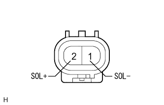

Compressor Assembly (Engine Type 2AZ-FE) Inspection |
| 1. Inspect Compressor Assembly (with Pulley) |
Resistance Measurement
 |
Using SST (Toyota electrical tester), measure the resistance between the connector terminals of the compressor assembly (with pulley).
| Tester Connection (Terminal Symbol) | Condition | Standard |
|---|---|---|
| 2(SOL+) - 1(SOL-) | Compressor temperature 20°C | 10.1Ω to 11.1Ω |